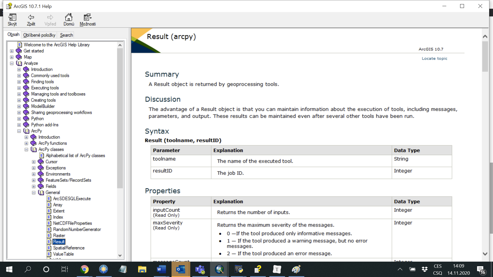

Lesson 10: Running ArcGIS tools using the ArcPy package
This lesson introduces the arcpy package, which provides ArcGIS functionality for use within Python. This includes - among many other things - the ability to run individual tools from ArcToolbox directly from a script without having to run ArcGIS (eg ArcMap) at all (but of course it must be installed). The arcpy package is distributed with ArcGIS. However, you need to be careful about the correct version: Python 2.7 is still used in the ArcGIS Desktop 10.X series (and it is also distributed with the program). In ArcGIS Pro, on the other hand, the latest series of Python is used, ie 3.X. However, having multiple versions of Python on your computer and always using the one you need shouldn't be a big deal.
In this lesson we will use data from the Liberec region.
Running tools and the Result object
The first step in making ArcGIS available to Python is to load the arcpy module:
import arcpy
If we then want to run a tool from ArcToolbox, eg the Clip tool, the syntax is usually as follows:
arcpy.<ToolName>_<toolbox_alias>(<tool_arguments>)
It is important to specify the alias of the respective toolbox, because there may be tools of the same name in different toolboxes, but they do something different (a good example is the Clip tool). The alias of the toolbox can be easily found in its properties (right click on the toolbox in ArcMap and select Properties). In the case of the Clip tool from the Analysis Tools -> Extract toolset, the command will look like this:
arcpy.Clip_analysis(r"C:\path\to\layer\I_want_to_clip.shp", r"C:\clip\layer.shp", r"C:\path\of\the\result.shp")
The syntax of the individual tools is always given on the corresponding ArcGIS help page, where there is always a section Syntax with an explanation of all parameters and a section Code sample with an example of use. Using help should become commonplace for you. In the case of the Clip tool, the relevant sections look like this:

Task 1. Use the Clip tool (either in a script or on the Python Shell console) to find the part of the road network that is located in the woods.
As can be seen, the tools from ArcToolbox are implemented in the arcpy module in the form of functions. What is the return value of these functions? In the vast majority of cases (does not apply to raster tools, as will be explained later), the return value is an object of class Result. It is possible to "capture" this object to a variable when running the tool and then continue working with it:
clip_output = arcpy.Clip_analysis(r"C:\path\to\layer\I_want_to_clip.shp",
r"C:\clip\layer.shp",
r"C:\path\of\the\result.shp")
The Result object represents a record of the tool's calculation progress, corresponding to what you know from the Results window in ArcMap. What does this object (or the relevant class) actually contain? The best answer will give us help again. In the ArcGIS help system, find the section Analyze -> ArcPy -> ArcPy Classes -> General -> Result:

In the help for this class we see the following sections: Summary (basic description of what the class is for), Discussion (further detail), Syntax (description of how a function of the same name - the so-called constructor of the class - can create a specific object of this class; this will not be needed in practice for Result objects), Properties (list of class properties - important!), Methods Overview (overview of class methods - important!), Methods (details of individual methods - important!) and Code sample (code samples of how the class is used - useful!).
Task 2. Study the help for the Result class and try to understand at least some of its properties and methods.
Demonstrate content - output address, messages ...
Buffer ...
Number of elements using GetCount ...
Python Window in ArcMap
Run Clip ... links to map document ...
Environment settings
The env class and what it contains ...
Task X. Use the
arcpymodule to change the working directory of ArcGIS.
in_memory ...
More settings ... overwriting layers ...
The second way ...
License Management
turning licenses on and off ...
Summary
Tasks
- MutliBuffer ...